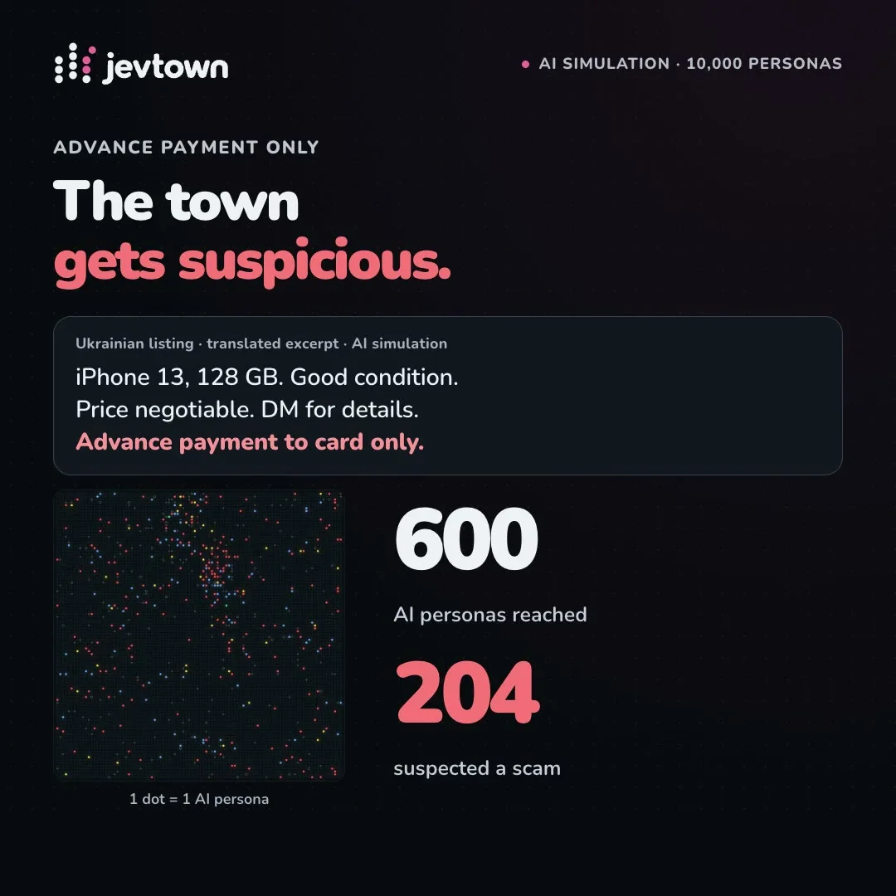
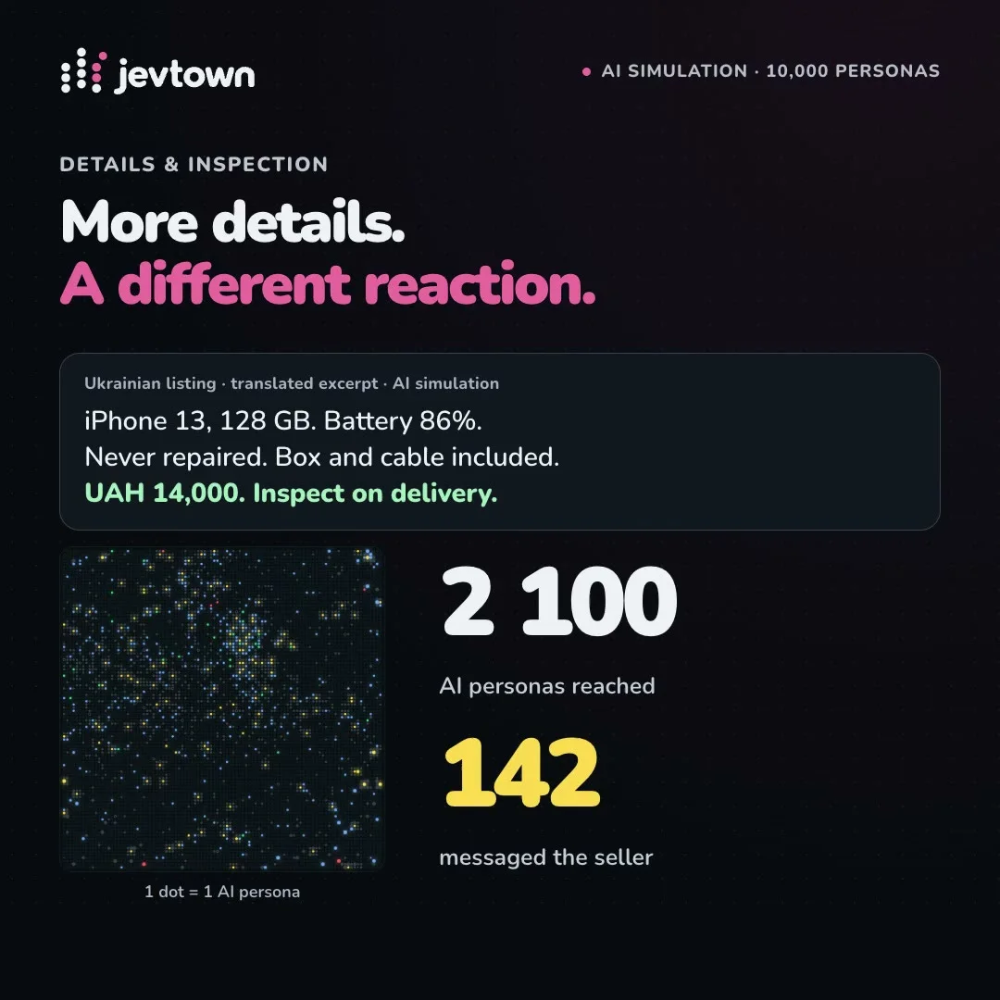

このUIがしていること
多くのJevデモが「1件を分類する」のに対し、ここでは多数の小さな判断を集約し、文面ごとの集団の反応として読ませている。文面を書き換えて流し直し、2案を並べて比べる構成なので、結果を見て書き直すループが成立する。
設計者が持ち帰れる点は三つある。
- 個々の判断を見せず、集計と分布に変換すると、判断の数が多くても読み取れる。
- 反応の種類が案ごとに違う（疑う／連絡する）ため、二つの数字は単純比較できない。ラベルで読み分けさせる必要がある。
- 到達数が案によって大きく違う。反応数だけでなく分母を並べて見せないと、案の優劣を誤読しやすい。
キャプチャ
{kind=link}

（原寸の画像を開く）{kind=link}

（原寸の画像を開く）見る箇所同じ商品について文面を変えたときの、到達数と反応数の表示、1ドット=1住民の分布、反応の種類の違い
入力から画面の変化まで
-
判断への入力
中古スマートフォンの出品文（ウクライナ語出品の英訳抜粋と表示）。「前払いのみ」を含む案と、状態・価格・現地検品を書いた案の2つ。
-
Jevの判断
1万人のAI住民それぞれが文面を読んで反応する（作者は「住民の一人ひとりがJev」と説明）。個々の質問型は投稿から確認できない。
-
結果がUIをどう変えるか
到達数（600人・2,100人）と反応数（204人が詐欺を疑う・142人が出品者へ連絡）を大きな数字で表示し、1ドット=1住民の格子で分布を見せる。案ごとに見出しの色が変わる。
- 判断型の見立て
- 不明出典から判断できない
- 投稿は「1万人の住民がそれぞれJev」と述べるが、各住民に何を尋ねているか（質問型）は動画・画像から確認できない。
Jevとの適合
Jevを安価に大量呼び出しできる前提が、UIの形（分布の可視化）を決めている。ただし「AI住民」の反応は模擬であり、実在の読者の反応を予測する根拠にはならない。結果の校正や住民の作り方は画面から確認できない。
確認範囲と未確認事項
作者の投稿動画（30秒）から静止画を確認。ライブ版とリポジトリは作者が示すが、本調査では未アクセス。反応数は「AI住民」による模擬結果であり、実在の人の反応ではない。
- 確認済み投稿動画から得た2枚の静止画に見える文面、到達数、反応数、格子表示、および投稿文の説明
- 未検証ライブ版の動作、住民の設計方法、反応の再現性、実在の反応との一致、公開リポジトリの中身
- 推定扱い各住民の判断の質問型。文面案を切り替えて再実行できる構成だが、動画で確認できるのは2案の切り替えのみ
- 引用X投稿は2026-09-20（UTC）。動画から必要な範囲の静止画を切り出して引用。権利は作者に帰属する